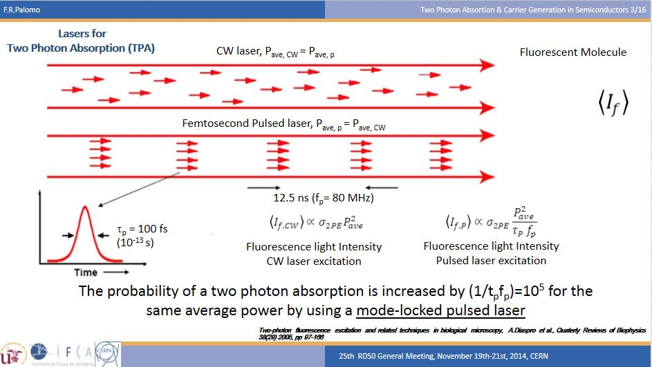
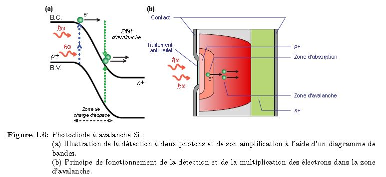
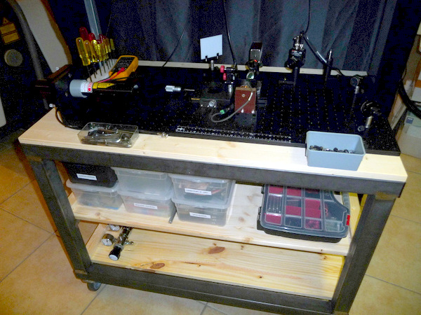

Home
> Realization autocorrelator
Realization of a multi-shot interferometric optical autocorrelator, using a GaP photodiode in 2 photon absorption regime ..
|
Introduction
Measuring with a photodiode the duration of a pulse of light produced by a femtosecond laser (1fs = 10 -15 s) is impossible by directly subjecting it to pulses.
Indeed the response time of the best photodiodes marketed today can characterize pulses of the order of 200ps, so far from the speed we need!
Fortunately, for many years femtosecond specialists have developed instruments that can work around this problem.
One of the first methods to be used is the optical autocorrelation (AC), it is this method that we will implement here.
It has the advantage of a relative simplicity and a lower cost compared to more refined methods of today, such as FROG, SPIDER, SPIRIT, RABBIT ... and other instruments with weird names.
On the other hand, it has the disadvantage of not giving access to all the information, especially to the time phase of the pulse that is lost during the measurement, and therefore not being able to characterize the precise temporal evolution. of this impulse.
That said, interferometric optical autocorrelation remains a basic method that gives satisfactory results as a first approximation.
The company THORLABS germany
|
Preparation of a 1st version using a "voice coil" mounted on a ball slide with a 12mm diameter mirror.
|
Principle of interferometric autocorrelator
The autocorrelator comprises a Michelson interferometer and a photodiode which is operated in absorption scheme 2 photons, as shown in Scheme sui will nt.
|
In our final assembly a tunable laser Titanium: Saphir MIRA900, set at 800nm, provides light pulses of 120fs FWHM.
The pulse enters the interferometer, it is divided into two pulses of equal intensity by a 50:50 splitter plate.
One of the pulses is reflected by a fixed mirror triprism, the other pulse is also reflected by a mirror of the same type, but it is movable, moved back and forth along the optical path by a voice coil at a frequency of the order of a few tens of hertz.
This allows to shift temporally, at will, one of the pulses relative to each other during the recombined by the separator. Moreover, this recombination is done collinearly, as can be seen in the diagram, the sum of the two fields thus allowing the phenomenon of interference.
This resulting field is then sent to the photodiode which converts it into an electrical signal.
This electrical signal is the result of a non-linear conversion process within the photodiode that can be mathematically expressed by saying that the autocorrelation signal S (tau) is equal to
When we draw this signal S (tau) as a function of tau, we obtain a figure (see the image) whose half-height envelope allows, if we have beforehand an idea of the shape of the envelope the pulse from the laser, to deduce the duration at half height (FWHM) of the latter and therefore
to estimate quite accurately the duration of the laser pulse.
|
|  |
Principle of two-photon absorption (biphotonic, still noted TPA in English)
|
Unit Goppert-Mayer 1 GM = 1.10 -50 cm 4 .s photons
|
|  |
For the 2-photon absorption to occur in the semiconductor, 2 photons must be together at the same place and at the same time (SPATIO-TEMPORAL RENDEZ-VOUS)
The possibility of the 2 photons meeting is limited in time by the lifetime of the virtual state which is 100 attoseconds (1atto = 10 -18 s).
To increase the chance that the two photons meet there must therefore be two conditions: 1- at the time level it is necessary to reduce the duration of emission while maintaining the number of photons so the photonic flux (W / cm²) 2- at the spatial level it is necessary to reduce the surface of illumination by means of a lens!
By playing on these 2 factors, with a pulsed laser the probability of photon interaction is increased by a factor of 5 to 10 6 compared to that obtained with a continuous laser.
|
|

For 2-photon absorption to generate an electron in the conduction band of the semiconductor, the sum of the energies of the 2 photons must be greater than the gap of the forbidden band of the semiconductor.
Expressed differently, one of the two photons must have an energy of at least half the energy of the bandgap.
One of the advantages of the two-photon absorption in a semiconductor, compared to the use of a non-linear crystal, is an extended spectral response: the photodiode makes it possible to measure over a wide range of lengths. waves, which is not the case with a nonlinear crystal.
The photodiode also makes it possible to overcome the difficulties imposed by the process of
|
THORLABS has proposed to provide us with the necessary components to realize this second order interferometric autocorrelator with their DET25K detector which contains a GaP diode with a receiving surface of 4.8mm 2 and a capacity of 1000pF @ 0V.
The rise time is 1ns and the descent time is 140ns @ 5V .....!
But what we want measured are pulses lasers from 10fs to 10ps is about 100'000 times shorter!
The 2-photon absorption process allows this thing.
The duration of the virtual state is 100 attoseconds 10-16s.
|
|
|
|
he THORLABS DET25K photodetector is equipped with a FELH0700 interference filter which blocks the light between 150nm and 700nm zone in which the sensitivity of the FGAP71 diode is located.
Only pulses at 800nm will therefore pass through the interference filter and then be concentrated by means of a high numerical aperture microscope objective on the GaP photodiode.
The energy of the forbidden band for the absorption of 2photons at 800nm is located at 400nm (3.2 eV) with a sensitivity of 0.11A / W.
With this diode it must also be possible to work with absorption at 2 photons between 600nm up to 1050nm!
This would make measurements on dye lasers such as RhodamineB, Kiton Red, Oxazine750, Pyridine2, Laser Titanium Sapphire, YAG: Nd.
For lasers located between 400nm and 300nm GaN diodes (gallium nitride) are very suitable.
The silicon diodes allow to work between 1200nm and 2000nm.
|
|
|
The realization of the experiment is being prepared ....... photos and measurements will follow! |
The auto-correlator consists of 2 parts which are:
A interferometer of MICHELSON which makes it possible to interfere the wave to be analyzed with the reference wave for that one displaces one of the mirrors of a distance L m1 which depends on the duration of the laser pulse to be analyzed. This distance is 150 microns for a pulse of 1ps and 15cm for a pulse of 1ns (1000ps)
To make these measurements I realized a test bench on a mobile optical table to move it next to the laser to measure.
The second part is the detection of the interferometric signal by means of double photon absorption in a GaP semiconductor.
In a first series of measurements we use a "voice coil" which activates a mirror support on a ball slide.
A second series of measurements will be done with a "voice coil" equipped on its stem with a retro-reflector (tri-prism)
A third series of measurements will be made with a mirror glued on a piezoelectric transducer (PbTiO 3 ) used to measure femtosecond pulses 10fs L m1 = 1.5 micron!
The detector in 2-photon absorption mode at a resolution lower than the femtosecond!
A 4th series of measurement will be carried out with a mirror mounted on a slide of 150mm running with a stepper motor which will measure pulses between
10fs and 1ns.
|
|  |
 |  |
|